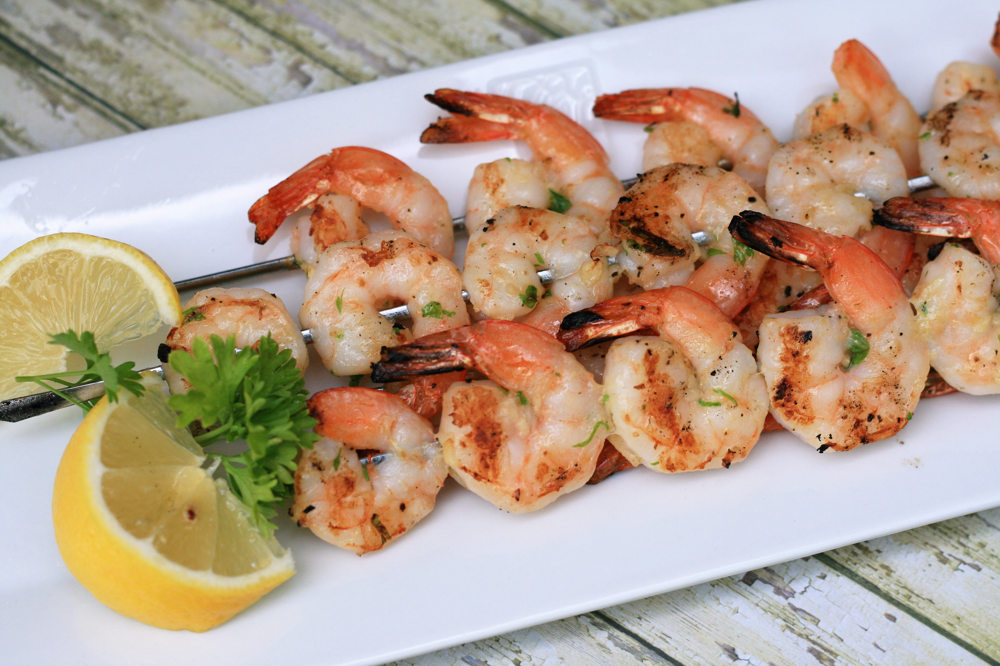

Garlic Shrimp Kabobs Recipe

Description
This is a quick and easy shrimp kabob recipe, perfect for beginners. Requires minimal ingredients, but is bursting with flavor. Serve over a bed of rice with fresh lemon wedges.
Ingredients
1 pound frozen shrimp, thawed and peeled
¼ cup olive oil
1 tablespoon minced garlic
2 teaspoons lemon juice
¼ teaspoon pepper
1 pinch finely chopped parsley
metal skewers
cooking spray